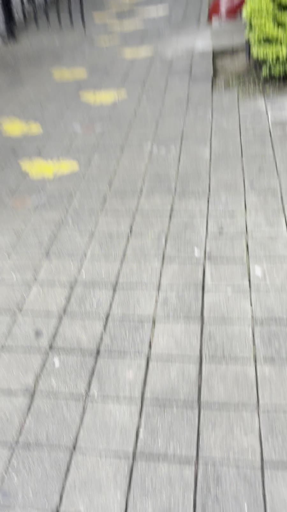
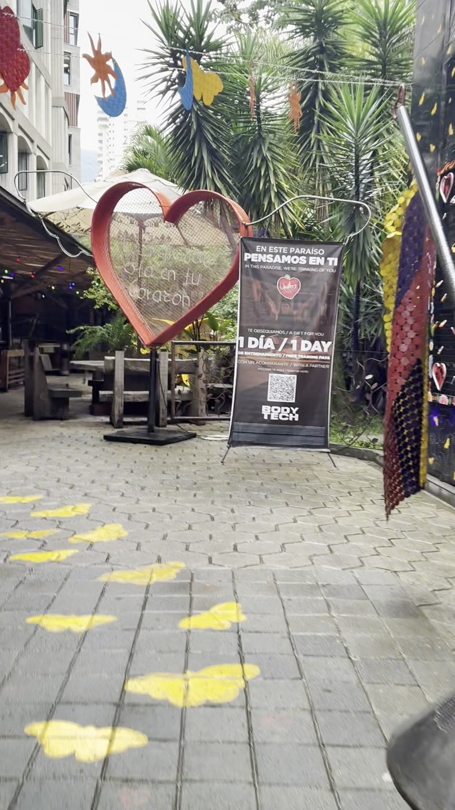
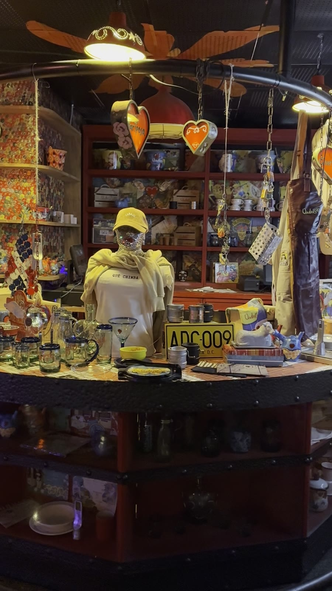
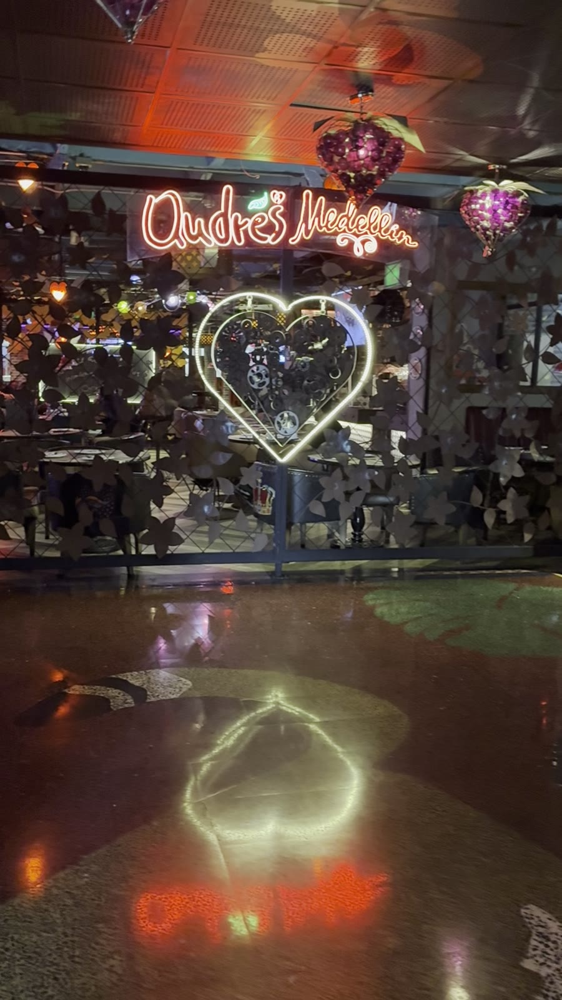

La entrada
La foto obligada
El corazón de engranajes
Antes de entrar, todo el mundo se para aquí: una vaca de colores con alas amarillas frente a un corazón gigante hecho de engranajes blancos. Si no hay foto, no fuiste.
Seguí los corazones amarillos. Adentro te espera la fiesta.
Un corazón de engranajes, palmas y letreros rojos. Y apenas estás llegando.
Están pintados en el piso. Ellos saben el camino.
Luces, neón y un corazón que brilla hasta en el piso.
El Poblado · Medellín
Carne a la brasa, música que te saca a bailar entre plato y plato, y una decoración que no cabe en una sola mirada. Venís a comer y te vas con una historia.
Carne a la brasa y cocina colombiana para compartir en la mesa.
La rumba no espera al postre: arranca donde estés sentado.
Cumpleaños, despedidas, aniversarios o un martes cualquiera.
La foto obligada
Antes de entrar, todo el mundo se para aquí: una vaca de colores con alas amarillas frente a un corazón gigante hecho de engranajes blancos. Si no hay foto, no fuiste.
Ya llegaste
El nombre en letras rojas gigantes entre las matas, y los corazones amarillos marcando el camino hasta la puerta.




Cómo llegar
Edificio Río Sur
frente al C.C. Oviedo
El Poblado, Medellín. Buscá las letras rojas y seguí los corazones.